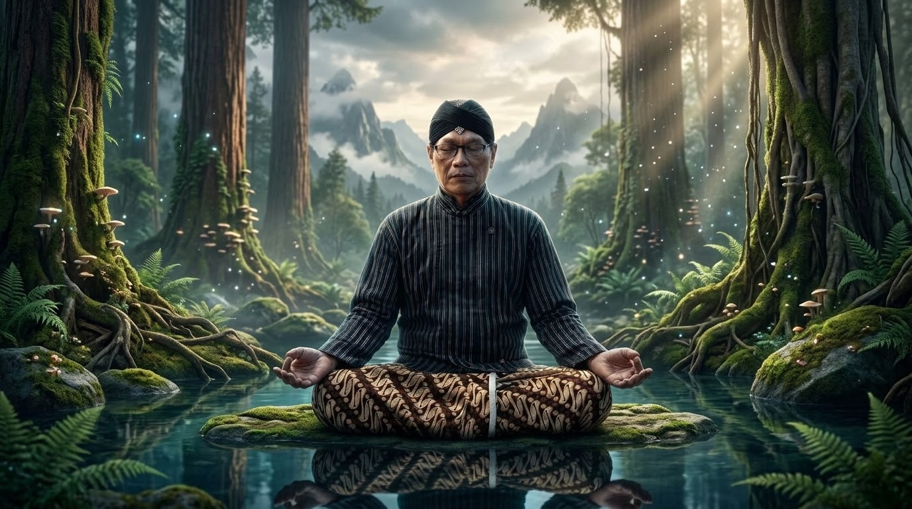

Rasa Sejati dalam Kawruh Uttamopadesa
Hakikat, Hubungan dengan Kesadaran, dan Perwujudannya dalam Laku Kehidupan.

Abstrak.
Rasa Sejati merupakan salah satu pokok pemaparan dalam Kawruh Uttamopadesa yang berhubungan dengan kedalaman penghayatan manusia terhadap diri sendiri, sesama, dan kehidupan. Rasa Sejati tidak sekadar berkaitan dengan perasaan yang muncul akibat pengalaman tertentu, tetapi juga dengan kemampuan menghayati keadaan secara jernih, tulus, dan bertanggung jawab.
Artikel ini memaparkan pengertian Rasa Sejati, hubungannya dengan Kesadaran, Cipta, dan Karsa, serta perwujudannya dalam kehidupan pribadi dan sosial. Pembahasan menekankan pentingnya ketulusan, welas asih, tenggang rasa, pengenalan diri, dan kesediaan memperbaiki kesalahan.
Rasa Sejati berkembang melalui laku yang memungkinkan manusia memeriksa prasangka, memahami keadaan secara tepat, dan tidak menjadikan kepentingan pribadi sebagai satu-satunya dasar dalam menentukan sikap.
Dalam kerangka Kawruh Uttamopadesa, Rasa Sejati berkaitan erat dengan Weninging Cipta dan Utamaning Karsa. Ketiganya membentuk keselarasan penghayatan, pemahaman, dan tindakan dalam kehidupan. Dengan demikian, Rasa Sejati menemukan maknanya bukan semata-mata dalam pengalaman batin, melainkan dalam perilaku yang mencerminkan ketulusan, kebijaksanaan, dan tanggung jawab.
Kata kunci: Rasa Sejati, Kawruh Uttamopadesa, Kesadaran, Cipta, Karsa, ketulusan, welas asih.
1. Pendahuluan.
Dalam menjalani kehidupan, manusia senantiasa berhadapan dengan berbagai pengalaman yang melibatkan pemikiran, perasaan, kehendak, dan tindakan. Pengalaman tersebut dapat menumbuhkan kepedulian, kasih sayang, keberanian, maupun tanggung jawab. Namun, pengalaman yang sama juga dapat memunculkan prasangka, kemarahan, kecemburuan, dan kepentingan pribadi yang mengaburkan pemahaman terhadap kenyataan.
Perasaan yang muncul dalam diri manusia tidak selalu menggambarkan keadaan secara tepat. Seseorang dapat merasa tersinggung karena menganggap dirinya direndahkan, padahal maksud orang lain belum dipahami. Seseorang juga dapat menunjukkan kepedulian terhadap sesama, tetapi tindakannya sesungguhnya didorong oleh keinginan memperoleh pujian atau pengakuan.
Keadaan tersebut menunjukkan bahwa kedalaman rasa tidak dapat diukur hanya berdasarkan kuatnya emosi atau baiknya perilaku yang tampak. Diperlukan kejernihan dalam memahami keadaan dan ketulusan dalam menentukan tindakan.
Dalam Kawruh Uttamopadesa, persoalan tersebut menjadi dasar pemaparan mengenai Rasa Sejati, yaitu kualitas penghayatan yang berkembang melalui pemurnian batin dan diwujudkan dalam laku kehidupan. Rasa Sejati tidak dimaksudkan sebagai pengalaman luar biasa atau kemampuan yang bersifat gaib, melainkan sebagai kedalaman penghayatan manusia dalam memahami diri, memperlakukan sesama, dan menyikapi kehidupan secara tepat.
Pembahasan Rasa Sejati berkaitan dengan hubungan Cipta, Rasa, dan Karsa. Cipta berhubungan dengan aktivitas memahami, mempertimbangkan, dan membedakan. Rasa berkaitan dengan penghayatan terhadap keadaan dan maknanya. Karsa berhubungan dengan kehendak yang mengarahkan pemahaman dan penghayatan menjadi tindakan.
Artikel ini bertujuan memaparkan hakikat Rasa Sejati, karakteristiknya, hambatan perkembangannya, serta penerapannya dalam kehidupan sehari-hari sebagai bagian dari usaha mencapai keselarasan hidup.
2. Hakikat Rasa Sejati.
Rasa Sejati merupakan kualitas penghayatan batin yang memungkinkan manusia memahami keadaan secara lebih mendalam, dengan ketulusan yang tidak semata-mata digerakkan oleh kepentingan pribadi.
Rasa Sejati berbeda dari perasaan spontan yang muncul akibat pengalaman tertentu. Perasaan spontan merupakan bagian wajar dari kehidupan manusia. Ketakutan, kesedihan, kegembiraan, dan kemarahan dapat muncul tanpa direncanakan. Akan tetapi, perasaan tersebut tidak selalu menjadi dasar yang tepat untuk menilai keadaan atau menentukan tindakan.
Seseorang yang sedang marah, misalnya, mungkin merasa bahwa membalas perkataan orang lain merupakan tindakan yang pantas. Namun, apabila ia mampu memahami keadaan secara lebih menyeluruh, ia dapat menyadari bahwa pembalasan justru memperbesar persoalan.
Rasa Sejati membantu manusia mengenali perasaan tanpa harus selalu mengikuti dorongan yang menyertainya. Manusia belajar memahami apa yang dirasakan, mengapa perasaan itu muncul, dan apakah penilaian yang menyertainya sesuai dengan keadaan sebenarnya.
Kesejatian rasa juga berkaitan dengan ketulusan. Seseorang tidak hanya berusaha menampilkan kebaikan, tetapi memeriksa maksud yang mendasari tindakannya. Ia menyadari bahwa perilaku yang tampak baik belum tentu dilandasi penghayatan yang tulus.
Dengan demikian, Rasa Sejati tidak berarti menghilangkan emosi atau menuntut manusia selalu berada dalam keadaan tenang. Rasa Sejati merupakan perkembangan kualitas penghayatan yang semakin jernih, tulus, dan bertanggung jawab.
3. Hubungan Rasa Sejati dengan Kesadaran, Cipta, dan Karsa.
Dalam kerangka Kawruh Uttamopadesa, Cipta, Rasa, dan Karsa merupakan aktivitas Kesadaran yang saling berkaitan dalam kehidupan manusia.
Cipta membantu manusia mengamati keadaan, mengolah ingatan, mempertimbangkan informasi, membedakan berbagai kemungkinan, dan memahami persoalan. Rasa memungkinkan manusia menghayati keadaan tersebut, menyadari maknanya bagi dirinya, serta memahami kepentingan dan penderitaan sesama. Karsa mengarahkan kehendak untuk menetapkan tujuan, memilih tindakan, dan mewujudkan keputusan.
Ketiganya tidak bekerja secara terpisah. Pemahaman dapat mempengaruhi penghayatan, sedangkan penghayatan dapat mendorong manusia memeriksa kembali pemahamannya. Keduanya kemudian berhubungan dengan kehendak untuk menentukan tindakan yang sesuai.
Sebagai contoh, ketika melihat seseorang mengalami kesulitan, Cipta membantu memahami keadaan dan kebutuhan orang tersebut. Rasa menumbuhkan penghayatan terhadap kesulitan yang dialaminya. Karsa mengarahkan kehendak untuk memberikan bantuan yang tepat sesuai kemampuan.
p>Apabila Cipta tidak jernih, bantuan dapat diberikan berdasarkan dugaan yang keliru. Apabila Rasa tidak tulus, bantuan dapat dijadikan sarana untuk memperoleh pujian. Apabila Karsa tidak berkembang, kepedulian mungkin hanya berhenti sebagai perasaan tanpa tindakan nyata.Oleh sebab itu, Rasa Sejati perlu berkembang bersama kejernihan Cipta dan keutamaan Karsa. Keselarasan ketiganya menjadi landasan penting bagi pembentukan perilaku yang bijaksana.
4. Ketulusan sebagai Dasar Rasa Sejati.
Ketulusan menunjukkan bahwa penghayatan manusia tidak semata-mata diarahkan untuk memenuhi kepentingan tersembunyi. Ketulusan dapat terlihat ketika seseorang membantu tanpa memperalat kesulitan orang lain, mengakui kesalahan tanpa mencari pembenaran, dan menjalankan tanggung jawab meskipun tidak memperoleh pujian.
Namun, ketulusan bukan berarti mengabaikan kepentingan diri sendiri. Manusia tetap memiliki kebutuhan, hak, dan batas yang perlu dihormati. Membantu sesama tidak berarti harus menerima perlakuan sewenang-wenang. Mengasihi tidak berarti membenarkan tindakan yang merugikan.
Rasa Sejati menuntun manusia untuk menempatkan kepentingan diri dan kepentingan sesama secara wajar. Ketulusan memungkinkan seseorang bersikap baik tanpa kehilangan pertimbangan, serta bersikap tegas tanpa harus dilandasi kebencian.
Ketulusan juga memerlukan kejujuran terhadap diri sendiri. Manusia perlu berani mengenali pamrih, keinginan memperoleh pengakuan, atau dorongan untuk menguasai orang lain yang mungkin tersembunyi di balik tindakan yang tampak baik.
Pemeriksaan diri tersebut bukan untuk menumbuhkan kebencian terhadap diri sendiri, melainkan untuk memperbaiki dasar penghayatan dan tindakan. Dengan demikian, ketulusan menjadi laku yang terus dikembangkan, bukan sekadar sifat yang diklaim telah dimiliki.
5. Rasa Sejati dalam wujud Welas Asih dan Tenggang Rasa.
Welas asih merupakan kesediaan memahami penderitaan dan kesulitan sesama, disertai dorongan untuk mengurangi kesulitan tersebut apabila memungkinkan. Welas asih tidak berhenti pada rasa iba, tetapi diwujudkan melalui kepedulian yang mempertimbangkan kebutuhan nyata.
Bantuan yang diberikan tanpa memahami keadaan dapat menghasilkan akibat yang tidak tepat. Karena itu, welas asih memerlukan kejernihan Cipta agar manusia mampu menentukan bentuk pertolongan yang sesuai dan tetap menghormati martabat penerimanya.
Sementara itu, tenggang rasa merupakan kemampuan mempertimbangkan keadaan, kepentingan, dan perasaan orang lain ketika menentukan sikap. Tenggang rasa tercermin dalam cara berbicara, menyampaikan kritik, menyelesaikan perbedaan, dan menggunakan kebebasan tanpa merugikan sesama.
Tenggang rasa tidak berarti harus selalu mengalah. Manusia tetap dapat menolak permintaan yang tidak patut, menyampaikan keberatan, dan mempertahankan pendirian. Yang perlu dijaga ialah cara melakukannya agar ketegasan tidak berubah menjadi penghinaan atau keinginan menyakiti.
Welas asih dan tenggang rasa saling melengkapi. Welas asih menumbuhkan kepedulian terhadap penderitaan, sedangkan tenggang rasa membantu manusia mempertimbangkan keadaan sesama dalam menentukan sikap. Keduanya merupakan wujud Rasa Sejati ketika disertai pemahaman yang jernih dan tindakan yang bertanggung jawab.
6. Hambatan dalam Perkembangan Rasa Sejati.
Perkembangan Rasa Sejati dapat terhambat oleh berbagai kecenderungan yang mempengaruhi cara manusia menghayati dan memahami keadaan.
Pertama, pamrih, yaitu kecenderungan melakukan sesuatu terutama untuk memperoleh pujian, keuntungan, atau balasan. Pamrih menjadi penghalang ketika menguasai tindakan dan mengabaikan kepentingan yang sepatutnya diperhatikan.
Kedua, prasangka, yaitu penilaian yang dibentuk sebelum keadaan dipahami secara memadai. Prasangka dapat melahirkan kemarahan, ketidakpercayaan, dan tindakan yang tidak sesuai dengan kenyataan.
Ketiga, keterikatan pada perasaan. Manusia dapat menganggap bahwa segala sesuatu yang dirasakannya pasti benar. Padahal, perasaan merupakan pengalaman yang perlu dipahami, bukan selalu dijadikan ukuran mutlak.
Keempat, kepalsuan sikap, yaitu keadaan ketika seseorang menampilkan kepedulian untuk menutupi maksud yang berbeda. Kebiasaan tersebut dapat merusak kepercayaan dan menghambat ketulusan.
Kelima, ketidakselarasan antara penghayatan dan tindakan. Seseorang mungkin mengetahui kebaikan dan merasakan kepedulian, tetapi tidak bersedia mewujudkannya. Keadaan ini menunjukkan bahwa penghayatan belum sepenuhnya terwujud dalam laku.
Mengenali berbagai hambatan tersebut merupakan bagian dari pemurnian Rasa. Manusia tidak dituntut menjadi sempurna seketika, melainkan bersedia mengakui kekurangan dan memperbaikinya secara berkelanjutan.
7. Laku Pengembangan Rasa Sejati.
Rasa Sejati berkembang melalui pengalaman dan laku sehari-hari, bukan hanya melalui pemahaman terhadap istilah atau pernyataan mengenai ketulusan.
Langkah pertama ialah mengenali keadaan diri. Ketika muncul kemarahan, kecemburuan, ketakutan, atau rasa tersinggung, manusia berusaha memahami pengalaman tersebut sebelum menentukan tindakan.
Langkah kedua ialah memeriksa dasar penilaian. Manusia membedakan antara keadaan yang benar-benar diketahui dan dugaan yang belum memiliki dasar memadai. Kebiasaan ini membantu menjernihkan Cipta sehingga penghayatan tidak mudah dikuasai prasangka.
Langkah ketiga ialah berusaha memahami keadaan sesama. Mendengarkan dengan saksama, memperhatikan kebutuhan, dan tidak terburu-buru menyimpulkan maksud orang lain merupakan bentuk latihan tenggang rasa.
Langkah keempat ialah memeriksa ketulusan tindakan. Manusia perlu bertanya apakah bantuan yang diberikan benar-benar diperlukan atau justru dimaksudkan untuk memperoleh pengakuan.
Langkah kelima ialah mewujudkan kepedulian melalui tindakan yang tepat. Penghayatan yang tulus perlu disertai kesediaan membantu, memenuhi tanggung jawab, menyampaikan kebenaran secara patut, dan memperbaiki kesalahan.
Langkah keenam ialah mengevaluasi akibat tindakan. Niat baik tidak selalu menghasilkan akibat yang baik. Karena itu, manusia perlu bersedia menerima masukan, belajar dari pengalaman, dan mengubah cara bertindak apabila ditemukan kekeliruan.
Laku tersebut merupakan proses berkelanjutan. Perkembangan Rasa Sejati dapat mengalami perubahan sesuai keadaan yang dihadapi. Hal terpenting ialah kesediaan untuk terus memperbaiki diri dan menyelaraskan penghayatan dengan tindakan.
8. Rasa Sejati sebagai Bagian dari Keselarasan Hidup.
Dalam Kawruh Uttamopadesa, keselarasan hidup berhubungan dengan keterpaduan Cipta, Rasa, dan Karsa dalam laku. Keselarasan tidak berarti manusia selalu merasa nyaman atau tidak pernah menghadapi pertentangan. Keselarasan berarti mampu menempatkan pemahaman, penghayatan, dan kehendak secara tepat dalam menghadapi kenyataan.
Weninging Cipta membantu manusia memahami keadaan tanpa dikuasai prasangka. Tulusing Rasa mengarahkan penghayatan menuju ketulusan dan kepedulian. Utamaning Karsa mewujudkan pemahaman dan penghayatan tersebut dalam tindakan yang patut.
Ketiganya tidak dapat dipisahkan. Kejernihan Cipta tanpa ketulusan Rasa dapat menjadikan pengetahuan sebagai alat untuk memanipulasi sesama. Ketulusan Rasa tanpa kejernihan Cipta dapat menghasilkan tindakan yang tidak tepat. Sementara itu, Cipta dan Rasa tanpa Karsa dapat berhenti sebagai pemahaman dan niat yang tidak diwujudkan.
Karena itu, perkembangan Rasa Sejati perlu dikenali melalui kualitas laku. Manusia semakin mampu bersikap adil, memahami keadaan sesama, menjaga ketulusan, dan mempertanggungjawabkan tindakannya. Ia juga semakin bersedia mengakui kesalahan tanpa kehilangan keberanian untuk memperbaikinya.
Keselarasan hidup bukan sekadar keadaan batin yang dirasakan seseorang, melainkan juga kualitas hubungan antara pemahaman, penghayatan, kehendak, dan tindakan dalam kehidupan nyata.
9. Penutup.
Rasa Sejati dalam Kawruh Uttamopadesa merupakan kualitas penghayatan batin yang berkembang melalui kejernihan, ketulusan, dan kesediaan memahami keadaan diri maupun sesama secara lebih mendalam. Rasa Sejati tidak identik dengan kuatnya emosi atau perasaan positif, tetapi berkaitan dengan kemampuan menghayati pengalaman tanpa menjadikannya satu-satunya dasar untuk menentukan sikap.
Hubungannya dengan Cipta dan Karsa menunjukkan bahwa penghayatan perlu disertai pemahaman yang jernih dan kehendak untuk bertindak secara bertanggung jawab. Ketulusan, welas asih, dan tenggang rasa menjadi perwujudan penting dari perkembangan tersebut.
Pada akhirnya, Rasa Sejati menemukan maknanya dalam keselarasan Cipta, Rasa, dan Karsa. Manusia tidak hanya merasakan kepedulian, tetapi berusaha memahami bagaimana kepedulian itu diwujudkan secara tepat. Ia tidak hanya mengetahui kebaikan, tetapi bersedia menjalankannya melalui laku yang nyata.
Dengan demikian, Rasa Sejati merupakan penghayatan yang terus dimurnikan melalui kejernihan Kesadaran, ketulusan batin, dan perwujudan Karsa Utama dalam kehidupan sehari-hari.
FAQ – Rasa Sejati dalam Kawruh Uttamopadesa.
1. Apa yang dimaksud dengan Rasa Sejati?
Rasa Sejati adalah kualitas penghayatan batin yang memungkinkan manusia memahami keadaan diri dan sesama secara mendalam, dengan ketulusan dan tanggung jawab.
2. Apa perbedaan Rasa Sejati dan perasaan biasa?
Perasaan biasa muncul sebagai respons terhadap pengalaman, sedangkan Rasa Sejati berkaitan dengan penghayatan yang jernih dan tulus dalam memahami keadaan serta menentukan sikap.
3. Bagaimana hubungan Rasa Sejati dengan Cipta dan Karsa?
Cipta membantu memahami keadaan, Rasa menghayati maknanya, sedangkan Karsa mengarahkan kehendak untuk mewujudkan pemahaman dan penghayatan dalam tindakan.
4. Apa hubungan Rasa Sejati dengan welas asih dan tenggang rasa?
Welas asih menumbuhkan kepedulian terhadap penderitaan sesama, sedangkan tenggang rasa membantu mempertimbangkan keadaan dan kepentingan orang lain dalam menentukan sikap.
5. Bagaimana cara mengembangkan Rasa Sejati?
Rasa Sejati dikembangkan melalui pengenalan diri, pemeriksaan terhadap prasangka dan pamrih, pemahaman terhadap sesama, serta tindakan yang tulus dan bertanggung jawab.
6. Apa tanda Rasa Sejati berkembang dalam kehidupan?
Perkembangannya terlihat dari ketulusan, kejernihan dalam menilai keadaan, kepedulian terhadap sesama, kemampuan bersikap tegas tanpa merendahkan, dan kesediaan memperbaiki kesalahan.